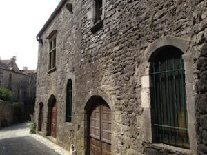
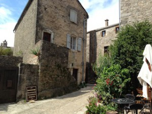
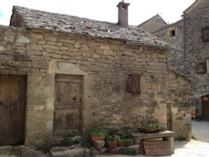
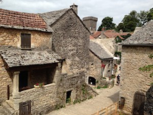
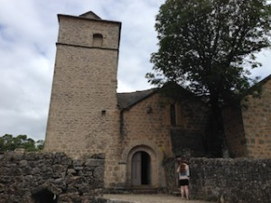
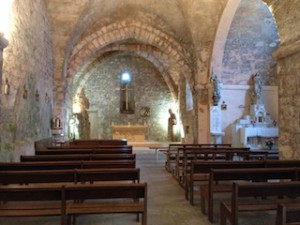
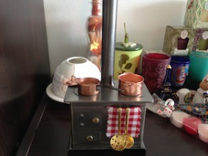

世界一高い場所に架かる橋，ミヨー橋を越え、A75（高速道路）を南へと進んで行くとPlageau de Larzac（プラトー ドゥ ラルザク）と呼ばれる高地へと辿り着きます。どんどん山を登ったかと思うとそこから下らず永遠と平地が続きます。日本人には少し不思議な地形です。
この一帯はGrands Causses National Regional Parc（グラン・コース自然地方公園）として保護さており、ヨーロッパでも一番美しい自然が楽しめる場所として有名です。
広大な高地の合間に深い谷がいくつも入り組んでいる眺めは圧巻。
クリック
そしてこの住む人もまばらな地域にテンプル騎士団、聖ヨハネ騎士団がかつて築きあげたという村が点在しているのです。
Larzac Rampartと呼ばれる一帯には5つの見所があります。
・La Cavalerie
・Le Viala du Pas de Jaux
・Saint-Jean-d’Alcas
・La Couvertoirade
・Ste-Eulalie de Cernon
今回私達が訪れたのはLa Couvertoirade（ラ・クヴェルトワラドゥ）。




古い石造りの集落がひっそりと佇んでいます。ここにテンプル騎士団や聖ヨハネ騎士団が・・・感動です。


そして村を見下ろす場所に教会が。そばには騎士団の十字架マークの入った墓がいくつか残っていました。どんな人がここに眠っているのでしょうか・・・。
テンプル騎士団とは：
エルサレムへ向かう殉教者たちの旅の安全を守るため1113年に聖ヨハネ騎士団、1120年にテンプル騎士団が誕生しました。12世紀中頃、テンプル騎士団がLarzacに落ち着いた頃、この高地一帯は複数の地主たちが支配していました。それが12世紀後半になると多くの寄進が行われ、Larzac高地はテンプル騎士団の支配下に置かれることになります。そしてそれから150年の間、騎士団は分散してくらしていた高地住人をLa Cavertoiradeなどの集落に集めます。1312年には、テンプル騎士団は教皇によって廃止され全ての財産は聖ヨハネ騎士団へと引き渡されることになります。さらに百年戦争（1338ー1453）による社会不安の中、聖ヨハネ騎士団は受け継いだ集落の強化をはかるのですが、16世紀にはユグノー派教会により集落は奪われてしまいます。ちなみに聖ヨハネ騎士団はその後マルタ島を与えられます（歴史がいっぱいのマルタ島の旅も良かったですよ！）。聖ヨハネ騎士団はマルタ騎士団とも呼ばれます。
またこの集落の中には小さなお土産屋さんやカフェなどもあります。
地元の果物、ハチミツ、ハム、チーズなど美味しそうなものがいっぱい。サンドイッチ屋さんでサンドイッチとチーズを買って野原でピクニック。景色は最高！
クリック
おすすめのショップはGilles DIRUITさんの作る、なんて言うんでしょうか・・・説明が・・・

このストーブのミニチュアなのですが、煙突やなべに香水をしみ込ませて、後ろ側は見えませんが空洞になっているのでそこでキャンドルに火をつけると、その熱で香りがふわっと部屋中に広がるのです。これはBonne idéeです。小さなお店に一つ一つ手作りの作品がずらーっと並んでいます。騎士団とは全く関係ないのですが・・・女性には喜ばれそうな。おすすめです。
BRÛLE PARFUM METAL
Atelier Métamorphose
12230 La Couvertoirade
中世の歴史や、テンプル騎士団に興味のある方にはとてもおもしろい場所だと思います。機会があれば是非。ただ車がないとアクセスできないのが難点ですが。
Conservatoire Larzac オフィシャルサイト （音に注意）


{kind=link}
{kind=link}
{kind=link}
{kind=link}
{kind=link}
{kind=link}
{kind=link}
{kind=link}
{kind=link}
{kind=link}